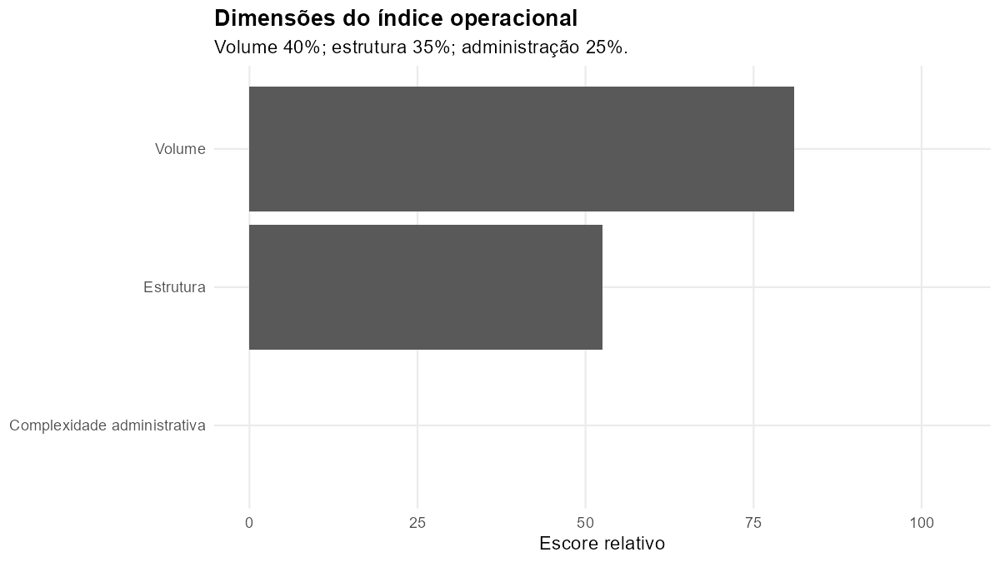
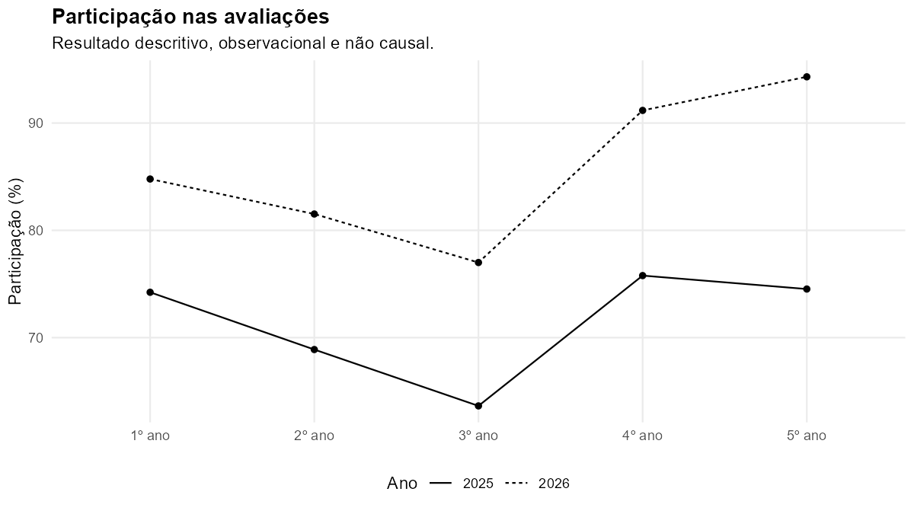
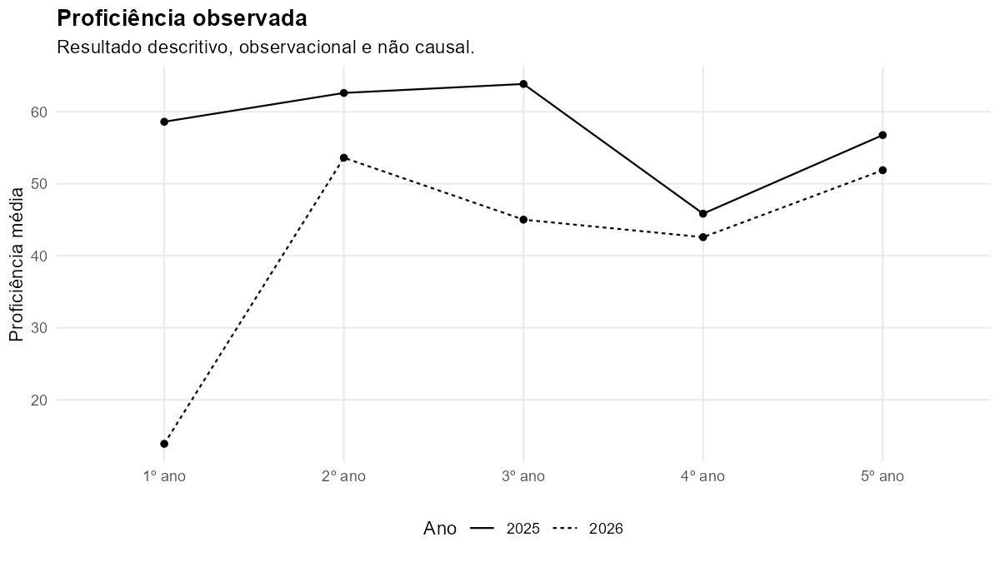

EMEF CHICO MENDES
OPERACIONALID: ESC_008INEP: 43177581Identificação e vínculos
Assessora gerencial 2026
eliane
Vínculo administrativo
eliane
Recebe assessoramento 2026
Sim
Grupo de exposição
ASSESSORADA
Índice operacional
Complexidade administrativa
0,0

Índice relativo e descritivo; não mede integralmente horas, deslocamentos, eventos emergenciais ou toda a carga real.
Diagnóstico educacional contextual


Resultados educacionais são observacionais, descritivos e sujeitos a diferenças de participação, composição e cobertura. Não representam efeito do assessoramento nem desempenho da assessora.
Resultados por ano escolar
| Série | Prev. 2025 | Aval. 2025 | Part. 2025 | Prof. 2025 | Prev. 2026 | Aval. 2026 | Part. 2026 | Prof. 2026 |
|---|
| 1º | 97 | 72 | 74,2% | 58,6 | 92 | 78 | 84,8% | 13,9 |
| 2º | 90 | 62 | 68,9% | 62,6 | 92 | 75 | 81,5% | 53,6 |
| 3º | 99 | 63 | 63,6% | 63,9 | 100 | 77 | 77,0% | 45,0 |
| 4º | 128 | 97 | 75,8% | 45,8 | 102 | 93 | 91,2% | 42,6 |
| 5º | 106 | 79 | 74,5% | 56,8 | 123 | 116 | 94,3% | 51,9 |
Execução 20260729_233939 — módulo 19 — estudo observacional e descritivo.